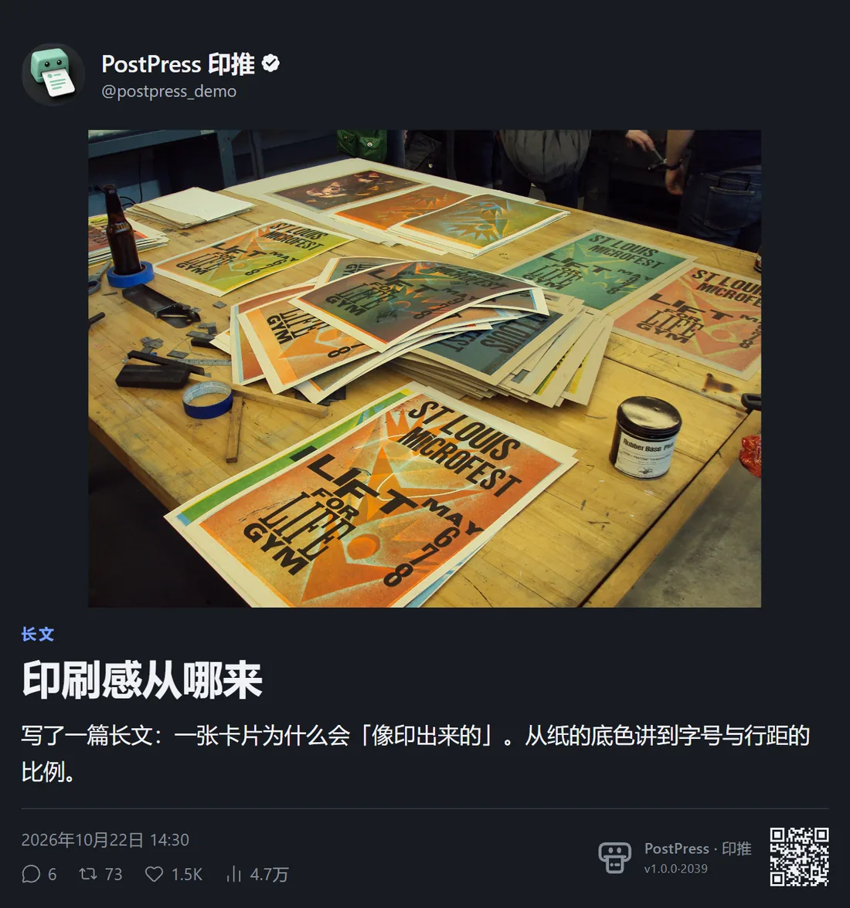
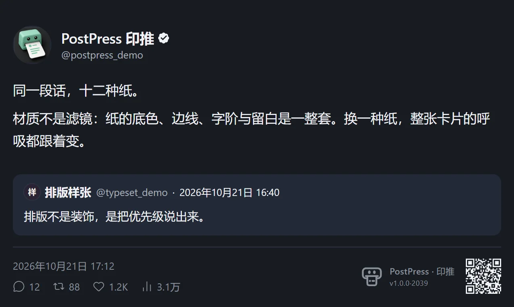
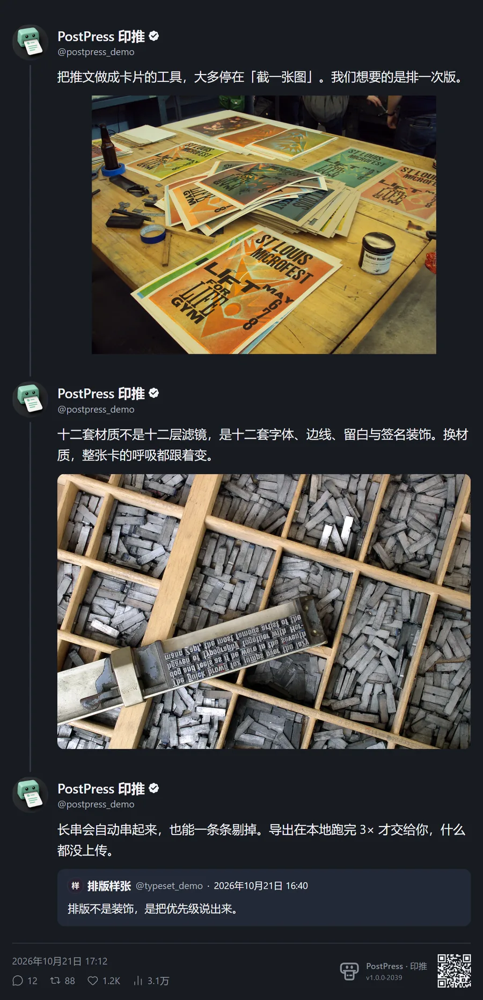
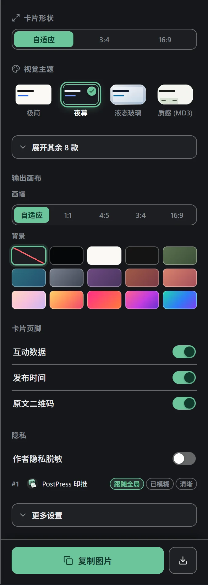
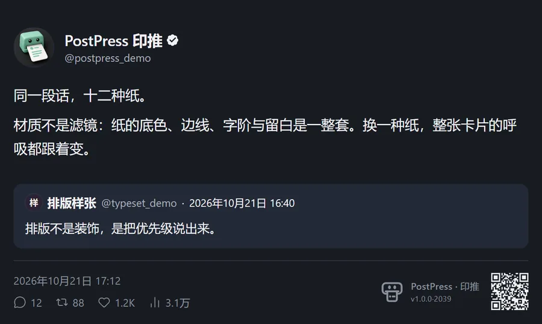
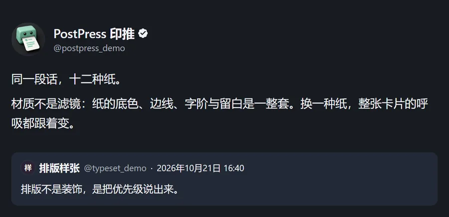
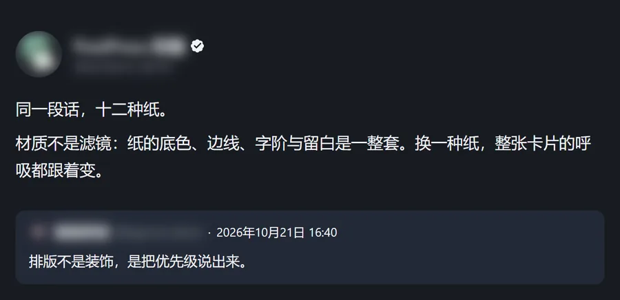

X 长文会带出封面与导语；引用贴按材质填充或描边；一到四张配图按各自比例拼成网格。
“不是滤镜，是纸、线与字的比例。”
- 长文 封面、栏目名、标题与导语一起带出来。
- 引用 填充或描边，跟当前材质走。
- 配图 一到四张按各自比例拼成网格，不裁成方块。

挑一种材质
夜幕 深墨底、浅字，夜里读也不刺眼。
同一条串里的推文按作者与时间接起来，广告和第三方回复被剔除。解析走两条路：先读 X 自己的 GraphQL 缓存，读不到再退回页面上的 DOM 标记。不想展示的那一条，点一下剔掉。


X 长文会带出封面与导语；引用贴按材质填充或描边；一到四张配图按各自比例拼成网格。
“不是滤镜，是纸、线与字的比例。”
材质、画幅、背景、页脚信息、作者模糊、导出清晰度都在这一块面板上；改一下，卡片立刻跟着变。




没有账号，没有服务器，没有遥测。排版在隔离的 Shadow DOM 里完成，导出交给浏览器自己的画布；除了向 X 的图片域名取你卡片里本来就有的配图，不发任何请求。
不读取你的时间线，不需要 X 账号，也不用 X API。与 X Corp. 无关联。
clipboardWrite
把渲染好的图片放进剪贴板，只在你点「复制」时用。
storage
记住你选的材质、画幅与开关；只存在本地。
*.twimg.com
取卡片里的配图。画布读不了跨域图片，没有它导出会失败。
目前只提供源码安装：Node 24 与 pnpm 10 构建一次，之后就在每条推文的操作栏里。
拉下源码装依赖再构建，产物在 dist/。
打开 chrome://extensions，开启「开发者模式」，点「加载已解压的扩展程序」，选 dist/。
在任意推文的操作栏点卡片按钮，或把鼠标停在推文上按 Alt + C。
git clone https://github.com/Shirolin/post-to-card.git
cd post-to-card
pnpm install
pnpm run build # → dist/以 GPL-3.0-or-later 发布：改完再分发请同样开源。
六个真问题，答案就在右边。
截屏跟着屏幕 DPI 走，还夹带浏览器界面。卡片是在隔离环境里按材质规范重新排版、再以 3× 光栅化的，输出干净，缩到信息流宽度依然锐利。
单条按 3× 导出。超长串默认 2× 以躲开尺寸上限；缩进信息流会小到难读时，面板会提示并建议分段。要极清可以在导出设置里强制 3×。
不需要。没有账号体系，只读当前页面已经渲染出来的内容和宿主自己的缓存，不碰任何凭据。
不会。图片只写到剪贴板和你的硬盘；关掉预览即释放内存，不在本地保存推文内容。
软件本身是 GPL-3.0-or-later，可以商用。卡片里的文字与配图仍属于原作者，公开可见不等于可以随意商用，分发前请自己确认。
Chrome 与 Edge，Chrome 111 起（Manifest V3）。Firefox 与 Safari 还没适配——扩展用的是 Chromium 的扩展接口。
装一次，之后每条推文的操作栏里都有它。渲染在本地，图在剪贴板。
装到浏览器